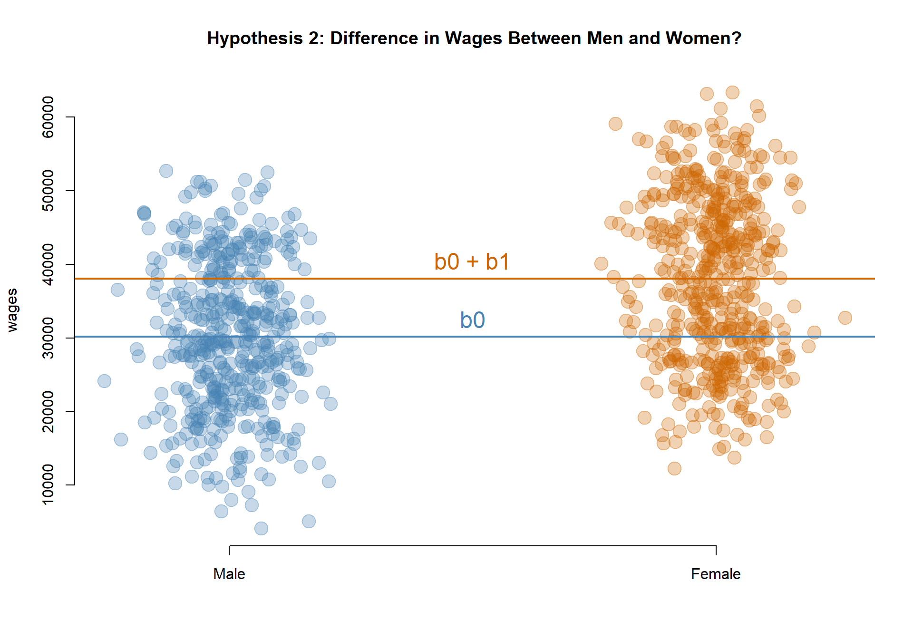
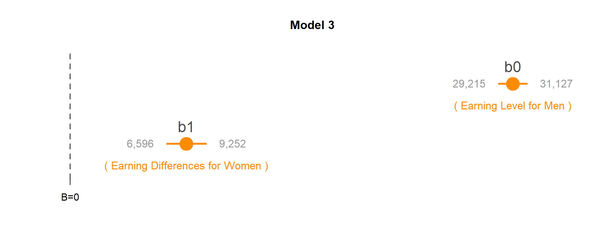
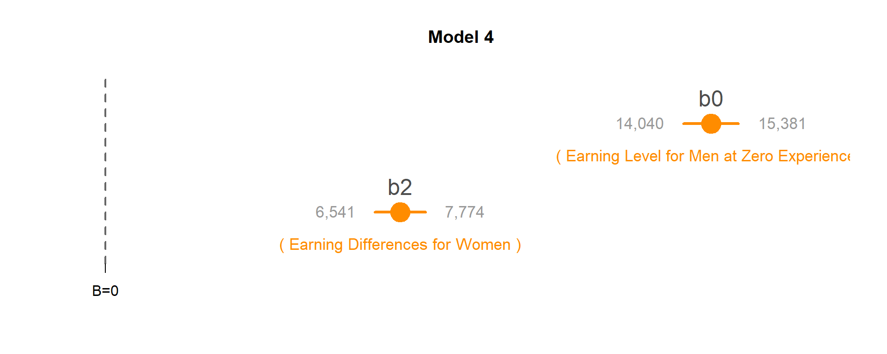
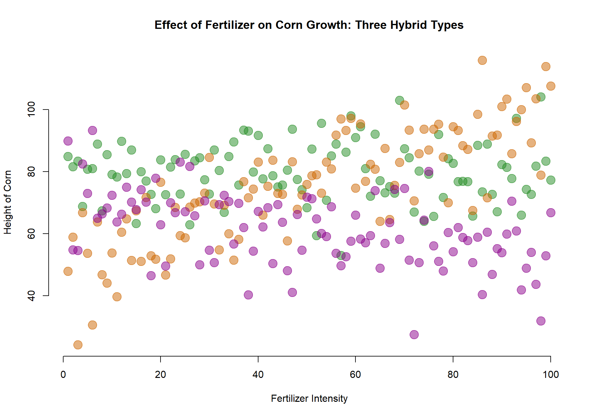

Let’s consider a basic model of wages as a function of years of professional experience.
| Dependent variable: | |
| wages | |
| Constant | 18,176*** |
| (377) | |
| years | 1,104*** |
| (22) | |
| Observations | 1,000 |
| Note: | p<0.1; p<0.05; p<0.01 |
This model tells us that at the intercept, which is where years of experience is equal to zero (also known as a person’s first job) the average annual earning is $18,106. Then on average people are granted raises of $1,104 a year.
Often times our data includes groups that might make our analysis much more interesting. For example, perhaps we are interested in how economic opportunities vary between men and women in the data:
palette( c("steelblue","darkorange3") )
plot( years, wages, pch=19, col=(female+1), cex=1.5, bty="n",
main="Wages by Years of Experience",
xlab="Years of Experience", ylab="Wages (annual)" )
abline( lm(wages~years), col="black", lwd=2 )
points( 25, 10000, col="steelblue", pch=19, cex=2 )
text( 25, 10000, "Male", col="steelblue", pos=4 )
points( 25, 17000, col="darkorange3", pch=19, cex=2 )
text( 25, 17000, "Female", col="darkorange3", pos=4 )In order to analyze data that includes groups we need to translate our categories into dummy avariables, binary variables where 1 indicates that a an observation belongs to the group, and 0 indicates that the observation does not.
data.frame( Wages=wages, Years=years, Female=female, Male=(1-female) )[1:10,] %>% pander| Wages | Years | Female | Male |
|---|---|---|---|
| 34973 | 25 | 0 | 1 |
| 39507 | 15 | 1 | 0 |
| 15904 | 3 | 1 | 0 |
| 35177 | 10 | 1 | 0 |
| 51115 | 23 | 1 | 0 |
| 24871 | 12 | 1 | 0 |
| 34695 | 14 | 0 | 1 |
| 17878 | 3 | 0 | 1 |
| 51431 | 29 | 1 | 0 |
| 58229 | 30 | 1 | 0 |
When we have categorical variables present we can ask more interesting questions of our data. Specifically, we can look at how relationships in the data vary across groups:
In the original data containing years of experience and annual pay there is only one primary hypothesis that we can test:
MODEL: \(Wages = b_0 + b_1*Female\)
TESTS: If b0 is significant, annual earnings for Men are different than zero. If b1 is significant, Women’s earnings are different than Men.
Note: This is an UNCONDITIONAL average, comparing the group means only. This effect could be caused by differences in professional experience between the groups (women, on average, have more experience and thus the group has higher wages).
palette( c( adjustcolor( "steelblue", alpha.f=0.3), adjustcolor( "darkorange3", alpha.f=0.3) ) )
plot( female+rnorm(1000,0,0.08), wages, col=female+1, pch=19, bty="n",
xlab="", xaxt="n", cex=2, main="Hypothesis 2: Difference in Wages Between Men and Women?" )
axis( side=1, at=c(0,1), c("Male","Female") )
abline( h=coefficients( m.02 )[1], col="steelblue", lwd=2 )
abline( h=sum(coefficients( m.02 )), col="darkorange3", lwd=2 )
text( 0.5, coefficients( m.02 )[1], "b0", pos=3, col="steelblue", cex=1.5 )
text( 0.5, sum(coefficients( m.02 )), "b0 + b1", pos=3, col="darkorange3", cex=1.5 )MODEL: \(Wages = b_0 + b_1*Years + b_2*Female\)
TEST: If b2 is significant then the Female intercept (b0+b2) is different than the Male intercept (b0).
b0 <- coefficients(m.03)[1]
b1 <- coefficients(m.03)[2]
b2 <- coefficients(m.03)[3]
palette( c( adjustcolor( "steelblue", alpha.f=0.3), adjustcolor( "darkorange3", alpha.f=0.3) ) )
plot( years+rnorm(1000,0,0.25), wages, pch=19, col=(female+1), cex=1.5, bty="n",
main="Hypothesis 3: Difference Wages for Women Conditional on Experience?", xlab="Years of Experience", xlim=c(-5,30) )
abline( a=b0, b=b1, col="steelblue", lwd=2 )
abline( a=b0+b2, b=b1, col="darkorange3", lwd=2 )
points( 25, 13000, col="steelblue", pch=19, cex=2 )
text( 25, 13000, "Male", col="steelblue", pos=4 )
points( 25, 17000, col="darkorange3", pch=19, cex=2 )
text( 25, 17000, "Female", col="darkorange3", pos=4 )
text( 5, 55000, "Wages = b0 + b1*Years + b2*Female", cex=1, col="gray10" )
text( 5, 50000, "Slope = b1", cex=1, col="gray10" )
text( -3.5, 20000, "b0 + b2", col="darkorange3", pos=3, cex=1.5 )
text( -3.5, 16000, "b0", col="steelblue", pos=1, cex=1.5 )Interpretting models that include dummy variables requires some care because of how regression models separate group data into parts.
There are two important things to note about these models.
First, including a dummy variable allows us to estimate separate intercepts for groups.
Second, if we want to test whether there are distinct slopes for each group we need to interact our dummy variables with the numeric variables. See Model 5.
data.frame( Wages=wages, Years=years, Female=female, Years_x_Female=(years*female) )[1:15,] %>% pander| Wages | Years | Female | Years_x_Female |
|---|---|---|---|
| 34973 | 25 | 0 | 0 |
| 39507 | 15 | 1 | 15 |
| 15904 | 3 | 1 | 3 |
| 35177 | 10 | 1 | 10 |
| 51115 | 23 | 1 | 23 |
| 24871 | 12 | 1 | 12 |
| 34695 | 14 | 0 | 0 |
| 17878 | 3 | 0 | 0 |
| 51431 | 29 | 1 | 29 |
| 58229 | 30 | 1 | 30 |
| 40803 | 12 | 1 | 12 |
| 59026 | 26 | 1 | 26 |
| 10997 | 1 | 0 | 0 |
| 43012 | 21 | 1 | 21 |
| 37732 | 21 | 0 | 0 |
It is impossible to include all distinct levels of groups in the models because of a mathematical problem called “perfect multi-collinearity”. As a result, dummy variable regressions typically exclude one level of each categorical variable, which then become the reference level of the model. All other coefficients in the model are in relation to and build off of the reference group.
m.01 <- lm( wages ~ 1 )
m.02 <- lm( wages ~ years )
m.03 <- lm( wages ~ female )
m.04 <- lm( wages ~ years + female )
m.05 <- lm( wages ~ years + female + years*female )m.01 <- lm( wages ~ 1 )
m.02 <- lm( wages ~ years )
m.03 <- lm( wages ~ female )
m.04 <- lm( wages ~ years + female )
m.05 <- lm( wages ~ years + female + years*female )
stargazer( m.01, m.02, m.03, m.04, m.05, type="html", digits=0,
intercept.bottom = FALSE,
covariate.labels = c("b0: Constant", "b1: years", "b2: female",
"b3: years x female"),
omit.stat = c("ser","f","adj.rsq","rsq") )| Dependent variable: | |||||
| wages | |||||
| (1) | (2) | (3) | (4) | (5) | |
| b0: Constant | 34,276*** | 18,176*** | 30,171*** | 14,710*** | 15,906*** |
| (360) | (377) | (487) | (342) | (423) | |
| b1: years | 1,104*** | 1,087*** | 1,003*** | ||
| (22) | (18) | (25) | |||
| b2: female | 7,924*** | 7,158*** | 4,716*** | ||
| (677) | (314) | (606) | |||
| b3: years x female | 168*** | ||||
| (36) | |||||
| Observations | 1,000 | 1,000 | 1,000 | 1,000 | 1,000 |
| Note: | p<0.1; p<0.05; p<0.01 | ||||
Note that Model 1 represents the default model which contains an intercept, but no slope. The intercept will represent the mean of Y, and a significant coefficient is just a test of whether the mean is different than zero (not a very meaningful hypothesis to test).
MODEL: \(Wages = b_0 + b_1*Female\)
TEST: If b1 is significant, Women’s earnings are different than Men’s.
Men are the reference group, so their earnings are captured by the intercept b0: $30,171.
The coefficient b1 captures the differences in wages between women and men, so female earnings are calculated as b0 + b1: $30,171 + $7,924 = $38,095.
Since b1 is statistically significant, men and women have different levels of earnings. Since we are using a female dummy variable (1=female, 0=male) then a positive coefficient tells us earnings are higher for women.
Note that the test for wage differences is:
\(wages_{women} = wages_{men}\)
\(wages_{women} - wages_{men} = 0\)
\((b_0 + b_1) - b_0 = 0\)
\(b_1 = 0\)
So the statistical significance for b1 is actually the test for wage differences (the null being wage differences are zero).
palette( c( adjustcolor( "steelblue", alpha.f=0.3), adjustcolor( "darkorange3", alpha.f=0.3) ) )
plot( female+rnorm(1000,0,0.08), wages, col=female+1, pch=19, bty="n",
xlab="", xaxt="n", cex=2, main="Hypothesis 2: Difference in Wages Between Men and Women?" )
axis( side=1, at=c(0,1), c("Male","Female") )
abline( h=coefficients( m.03 )[1], col="steelblue", lwd=2 )
abline( h=sum(coefficients( m.03 )), col="darkorange3", lwd=2 )
text( 0.5, coefficients( m.03 )[1], "b0", pos=3, col="steelblue", cex=1.5 )
text( 0.5, sum(coefficients( m.03 )), "b0 + b1", pos=3, col="darkorange3", cex=1.5 )

MODEL: \(Wages = b_0 + b_1*Years + b_2*Female\)
TEST: If b2 is significant then the Female intercept (b0+b2) is different than the Male intercept (b0).
The coefficient b2 is statistically significant so annual earnings on the first job vary by men and women.
Earnings in the first year of employement for men (b0): $14,710.48.
Earnings in the first year of employement for women (b0+b2): $21,868.08.
b0 <- coefficients(m.04)[1]
b1 <- coefficients(m.04)[2]
b2 <- coefficients(m.04)[3]
palette( c( adjustcolor( "steelblue", alpha.f=0.3), adjustcolor( "darkorange3", alpha.f=0.3) ) )
plot( years+rnorm(1000,0,0.25), wages, pch=19, col=(female+1), cex=1.5, bty="n",
main="Hypothesis 3: Difference Wages for Women Conditional on Experience?", xlab="Years of Experience", xlim=c(-5,30) )
abline( a=b0, b=b1, col="steelblue", lwd=2 )
abline( a=b0+b2, b=b1, col="darkorange3", lwd=2 )
points( 25, 13000, col="steelblue", pch=19, cex=2 )
text( 25, 13000, "Male", col="steelblue", pos=4 )
points( 25, 17000, col="darkorange3", pch=19, cex=2 )
text( 25, 17000, "Female", col="darkorange3", pos=4 )
text( 5, 55000, "Wages = b0 + b1*Years + b2*Female", cex=1, col="gray10" )
text( 5, 50000, "Slope = b1", cex=1, col="gray10" )
text( -3.5, 20000, "b0 + b2", col="darkorange3", pos=3, cex=1.5 )
text( -3.5, 16000, "b0", col="steelblue", pos=1, cex=1.5 )
One important thing to pay attention to in regressions with dummy variables is how the reference group is being constructed.
Let’s consider an example where we have developed three types of hybrid corns and we are trying to understand how these new varieties will respond to fertilizer.
# CORN AND FERTILIZER
#
# x <- 1:100
#
# noise <- 10
#
# a <- rnorm(100,80,noise)
# b <- 50 + 0.5*x + rnorm(100,0,noise)
# c <- 70 - 0.2*x + rnorm(100,0,noise)
#
# height <- c(a,b,c)
# fertilizer <- c(x,x,x)
# type <- rep(c("A","B","C"), each=100 )
#
# dumA <- rep(c(1,0,0), each=100 )
# dumB <- rep(c(0,1,0), each=100 )
# dumC <- rep(c(0,0,1), each=100 )
#
#
# dat <- data.frame( height, fertilizer, type, dumA, dumB, dumC )
# dput( dat )
dat <- structure(list(height = c(84.8823787863356, 81.5829092827922,
83.4358298812005, 68.8213813370342, 80.8573826988571, 81.0485785565725,
88.8857686962154, 67.4189815507121, 85.4846932501355, 79.1577369416566,
78.2993167540349, 89.7933037672656, 79.4348323819615, 87.0181042120402,
63.3293715508304, 79.9901210974918, 77.0084283923124, 72.670113845791,
68.0693315237495, 83.7859371546024, 72.660163675786, 81.4830473791962,
83.9726151402696, 72.8360914249101, 85.6090734101838, 62.9303955130078,
83.5368406107726, 84.5482977407981, 77.4071442646381, 72.8074859688982,
87.0662289714936, 80.3971392134386, 66.9336441762908, 84.9232513036697,
89.6423128335747, 75.6763347362126, 93.4366444311655, 93.1617226959905,
79.941207432285, 91.692662719636, 77.7238517623639, 87.4654268265086,
78.6805895699465, 75.1644556195101, 75.6718043547623, 80.519869597366,
93.7301317360083, 77.5216114259395, 74.1949843913591, 68.4631333832147,
87.3467313753704, 59.3910066747935, 95.6363774254989, 70.8597247318124,
85.1351710866197, 88.898951939707, 52.9799474197325, 86.3520340212514,
98.0171037573458, 91.0388449399764, 94.5122710476539, 81.0519227548362,
72.1587878286064, 92.1313239943173, 77.1222509395568, 73.1832240433087,
75.2115529661401, 73.0752584720694, 102.998693836452, 87.3833635435993,
84.4835113682223, 67.0279693251612, 80.2499865865405, 64.047238122541,
79.2304111786643, 65.6274312281287, 92.0154134463608, 71.7040631770878,
84.2671803952524, 82.7445717938349, 76.7968017854077, 76.9274821487821,
76.8453038230027, 65.7343029138455, 88.5595455326386, 73.5533683716934,
88.9075453127298, 72.7338468339089, 67.1160502773331, 82.3528712900471,
81.39365256705, 77.8697226260968, 97.2335263430491, 66.0471049310953,
74.3271382097975, 72.7329880114981, 81.7925960061676, 104.159100652603,
83.4430577365359, 77.3707113815548, 47.9385604964476, 58.9451970749953,
24.1836649407961, 66.8539292293009, 53.700789296629, 30.5850419601878,
63.7995489870215, 46.7560503185648, 44.0953071126681, 53.8076975480534,
39.7221035268199, 60.5171986486279, 64.7704204109699, 51.3735414233767,
67.3648041654176, 51.0880911703089, 71.7133674728028, 52.8999218424257,
51.7960003102119, 76.6106604547903, 46.6800654639816, 51.8899241665381,
68.527159250387, 59.4177866065241, 58.6838812628026, 68.6150736726941,
69.9051400226362, 70.3026680724838, 73.1112180507804, 84.5909683591189,
69.6178295173195, 54.8129279473636, 69.2417783693849, 60.0262259801884,
51.4938077079337, 58.2264970214344, 76.8660015653262, 71.5770761515984,
74.4143563258048, 83.153070467207, 66.0039448126792, 75.2898958505998,
83.7526479128678, 73.0052247140854, 72.7152139520076, 57.6639453173779,
83.2275055181584, 67.8953058607738, 72.556503961615, 75.9052262955136,
78.7059869776771, 79.020681851063, 73.1227462954383, 83.1694896378462,
80.9205822069283, 91.8692872790137, 97.0511234669594, 93.2838886616587,
97.2521351384681, 74.718905381375, 95.3900272750528, 76.9327777433571,
82.4304491847519, 80.8546990585036, 64.0153921294703, 87.5643368390667,
64.6106517667271, 75.6347026108747, 83.0250502500081, 101.544757165672,
93.4210554366665, 70.5892467704152, 85.8348471424181, 93.7222845339933,
86.9941388769178, 93.7079612495396, 95.342601927069, 84.6943030394871,
69.9730468475575, 94.546382590391, 93.3449257304082, 88.4367447133578,
87.1911985466493, 67.559672731354, 98.5345310388681, 115.986776214713,
71.6341554770594, 91.5199232584766, 91.8536372261783, 101.059347823138,
103.399775524026, 85.8213963870544, 96.2708392227436, 100.028690695035,
107.144553795847, 89.3597878512095, 103.541326219623, 78.9700199176571,
113.982632411562, 107.625087757413, 89.9126377667416, 54.8229207404254,
54.6035948085297, 82.5514847245402, 73.0343256375068, 93.3173553260807,
64.984443099106, 66.4277115062336, 68.3292117272704, 72.4088478887834,
63.7950527795539, 66.2776307101463, 75.0214844442367, 70.1668453359196,
67.8007577076108, 74.2405936701403, 70.220102083018, 46.4810310012535,
77.9567783555546, 62.8939538760101, 49.6368430644073, 70.0458427398281,
66.8571253978177, 83.1181956411808, 67.0673103577867, 81.7452720900802,
65.783241573369, 49.961073862091, 70.5797981073745, 54.6789750180432,
50.6926868153297, 69.3674308610539, 72.4010383901166, 70.3657412983627,
56.6747649676527, 69.8127628562313, 61.9721499681155, 40.3182877125587,
54.3730203880657, 67.2569324044038, 62.2575573821627, 68.4527885694622,
50.3924523992186, 69.3740545224647, 63.7541904196657, 48.0785562212759,
41.0906431036671, 66.1800053465102, 54.7319086953628, 71.8631452290731,
71.280046340787, 64.7936783952698, 60.1330789833191, 59.1325262819609,
68.7489867240966, 53.7309133824955, 49.7316488928809, 52.5710941985547,
57.6200798444466, 65.999164817474, 58.344285223883, 57.0597806287222,
59.3909019564334, 73.9208410772179, 48.9457546429752, 56.8586842846536,
63.6150378086077, 74.3389285776052, 58.1935540939292, 74.6470972995062,
51.4785251089264, 27.4796538477468, 50.6878145763362, 64.4329366401115,
80.1626808323705, 56.086147608325, 51.1363096663025, 47.9704527248218,
60.4038614626171, 54.2391589067078, 61.9879996620603, 58.8507191129675,
57.7721512893066, 50.6630949018672, 58.8914330530957, 40.4277908824916,
60.4966216806365, 46.8917121573842, 55.1956922279556, 53.8927256101175,
59.9249164879124, 70.4795404780817, 60.9539190008761, 41.8756896121901,
48.9133262561279, 54.0290643459507, 43.7303576681297, 31.8734735442469,
52.9242016968811, 66.8564025890661), fertilizer = c(1L, 2L, 3L,
4L, 5L, 6L, 7L, 8L, 9L, 10L, 11L, 12L, 13L, 14L, 15L, 16L, 17L,
18L, 19L, 20L, 21L, 22L, 23L, 24L, 25L, 26L, 27L, 28L, 29L, 30L,
31L, 32L, 33L, 34L, 35L, 36L, 37L, 38L, 39L, 40L, 41L, 42L, 43L,
44L, 45L, 46L, 47L, 48L, 49L, 50L, 51L, 52L, 53L, 54L, 55L, 56L,
57L, 58L, 59L, 60L, 61L, 62L, 63L, 64L, 65L, 66L, 67L, 68L, 69L,
70L, 71L, 72L, 73L, 74L, 75L, 76L, 77L, 78L, 79L, 80L, 81L, 82L,
83L, 84L, 85L, 86L, 87L, 88L, 89L, 90L, 91L, 92L, 93L, 94L, 95L,
96L, 97L, 98L, 99L, 100L, 1L, 2L, 3L, 4L, 5L, 6L, 7L, 8L, 9L,
10L, 11L, 12L, 13L, 14L, 15L, 16L, 17L, 18L, 19L, 20L, 21L, 22L,
23L, 24L, 25L, 26L, 27L, 28L, 29L, 30L, 31L, 32L, 33L, 34L, 35L,
36L, 37L, 38L, 39L, 40L, 41L, 42L, 43L, 44L, 45L, 46L, 47L, 48L,
49L, 50L, 51L, 52L, 53L, 54L, 55L, 56L, 57L, 58L, 59L, 60L, 61L,
62L, 63L, 64L, 65L, 66L, 67L, 68L, 69L, 70L, 71L, 72L, 73L, 74L,
75L, 76L, 77L, 78L, 79L, 80L, 81L, 82L, 83L, 84L, 85L, 86L, 87L,
88L, 89L, 90L, 91L, 92L, 93L, 94L, 95L, 96L, 97L, 98L, 99L, 100L,
1L, 2L, 3L, 4L, 5L, 6L, 7L, 8L, 9L, 10L, 11L, 12L, 13L, 14L,
15L, 16L, 17L, 18L, 19L, 20L, 21L, 22L, 23L, 24L, 25L, 26L, 27L,
28L, 29L, 30L, 31L, 32L, 33L, 34L, 35L, 36L, 37L, 38L, 39L, 40L,
41L, 42L, 43L, 44L, 45L, 46L, 47L, 48L, 49L, 50L, 51L, 52L, 53L,
54L, 55L, 56L, 57L, 58L, 59L, 60L, 61L, 62L, 63L, 64L, 65L, 66L,
67L, 68L, 69L, 70L, 71L, 72L, 73L, 74L, 75L, 76L, 77L, 78L, 79L,
80L, 81L, 82L, 83L, 84L, 85L, 86L, 87L, 88L, 89L, 90L, 91L, 92L,
93L, 94L, 95L, 96L, 97L, 98L, 99L, 100L), type = structure(c(1L,
1L, 1L, 1L, 1L, 1L, 1L, 1L, 1L, 1L, 1L, 1L, 1L, 1L, 1L, 1L, 1L,
1L, 1L, 1L, 1L, 1L, 1L, 1L, 1L, 1L, 1L, 1L, 1L, 1L, 1L, 1L, 1L,
1L, 1L, 1L, 1L, 1L, 1L, 1L, 1L, 1L, 1L, 1L, 1L, 1L, 1L, 1L, 1L,
1L, 1L, 1L, 1L, 1L, 1L, 1L, 1L, 1L, 1L, 1L, 1L, 1L, 1L, 1L, 1L,
1L, 1L, 1L, 1L, 1L, 1L, 1L, 1L, 1L, 1L, 1L, 1L, 1L, 1L, 1L, 1L,
1L, 1L, 1L, 1L, 1L, 1L, 1L, 1L, 1L, 1L, 1L, 1L, 1L, 1L, 1L, 1L,
1L, 1L, 1L, 2L, 2L, 2L, 2L, 2L, 2L, 2L, 2L, 2L, 2L, 2L, 2L, 2L,
2L, 2L, 2L, 2L, 2L, 2L, 2L, 2L, 2L, 2L, 2L, 2L, 2L, 2L, 2L, 2L,
2L, 2L, 2L, 2L, 2L, 2L, 2L, 2L, 2L, 2L, 2L, 2L, 2L, 2L, 2L, 2L,
2L, 2L, 2L, 2L, 2L, 2L, 2L, 2L, 2L, 2L, 2L, 2L, 2L, 2L, 2L, 2L,
2L, 2L, 2L, 2L, 2L, 2L, 2L, 2L, 2L, 2L, 2L, 2L, 2L, 2L, 2L, 2L,
2L, 2L, 2L, 2L, 2L, 2L, 2L, 2L, 2L, 2L, 2L, 2L, 2L, 2L, 2L, 2L,
2L, 2L, 2L, 2L, 2L, 2L, 2L, 3L, 3L, 3L, 3L, 3L, 3L, 3L, 3L, 3L,
3L, 3L, 3L, 3L, 3L, 3L, 3L, 3L, 3L, 3L, 3L, 3L, 3L, 3L, 3L, 3L,
3L, 3L, 3L, 3L, 3L, 3L, 3L, 3L, 3L, 3L, 3L, 3L, 3L, 3L, 3L, 3L,
3L, 3L, 3L, 3L, 3L, 3L, 3L, 3L, 3L, 3L, 3L, 3L, 3L, 3L, 3L, 3L,
3L, 3L, 3L, 3L, 3L, 3L, 3L, 3L, 3L, 3L, 3L, 3L, 3L, 3L, 3L, 3L,
3L, 3L, 3L, 3L, 3L, 3L, 3L, 3L, 3L, 3L, 3L, 3L, 3L, 3L, 3L, 3L,
3L, 3L, 3L, 3L, 3L, 3L, 3L, 3L, 3L, 3L, 3L), .Label = c("A",
"B", "C"), class = "factor"), dumA = c(1, 1, 1, 1, 1, 1, 1, 1,
1, 1, 1, 1, 1, 1, 1, 1, 1, 1, 1, 1, 1, 1, 1, 1, 1, 1, 1, 1, 1,
1, 1, 1, 1, 1, 1, 1, 1, 1, 1, 1, 1, 1, 1, 1, 1, 1, 1, 1, 1, 1,
1, 1, 1, 1, 1, 1, 1, 1, 1, 1, 1, 1, 1, 1, 1, 1, 1, 1, 1, 1, 1,
1, 1, 1, 1, 1, 1, 1, 1, 1, 1, 1, 1, 1, 1, 1, 1, 1, 1, 1, 1, 1,
1, 1, 1, 1, 1, 1, 1, 1, 0, 0, 0, 0, 0, 0, 0, 0, 0, 0, 0, 0, 0,
0, 0, 0, 0, 0, 0, 0, 0, 0, 0, 0, 0, 0, 0, 0, 0, 0, 0, 0, 0, 0,
0, 0, 0, 0, 0, 0, 0, 0, 0, 0, 0, 0, 0, 0, 0, 0, 0, 0, 0, 0, 0,
0, 0, 0, 0, 0, 0, 0, 0, 0, 0, 0, 0, 0, 0, 0, 0, 0, 0, 0, 0, 0,
0, 0, 0, 0, 0, 0, 0, 0, 0, 0, 0, 0, 0, 0, 0, 0, 0, 0, 0, 0, 0,
0, 0, 0, 0, 0, 0, 0, 0, 0, 0, 0, 0, 0, 0, 0, 0, 0, 0, 0, 0, 0,
0, 0, 0, 0, 0, 0, 0, 0, 0, 0, 0, 0, 0, 0, 0, 0, 0, 0, 0, 0, 0,
0, 0, 0, 0, 0, 0, 0, 0, 0, 0, 0, 0, 0, 0, 0, 0, 0, 0, 0, 0, 0,
0, 0, 0, 0, 0, 0, 0, 0, 0, 0, 0, 0, 0, 0, 0, 0, 0, 0, 0, 0, 0,
0, 0, 0, 0, 0, 0, 0, 0, 0, 0, 0, 0, 0, 0, 0, 0, 0, 0, 0), dumB = c(0,
0, 0, 0, 0, 0, 0, 0, 0, 0, 0, 0, 0, 0, 0, 0, 0, 0, 0, 0, 0, 0,
0, 0, 0, 0, 0, 0, 0, 0, 0, 0, 0, 0, 0, 0, 0, 0, 0, 0, 0, 0, 0,
0, 0, 0, 0, 0, 0, 0, 0, 0, 0, 0, 0, 0, 0, 0, 0, 0, 0, 0, 0, 0,
0, 0, 0, 0, 0, 0, 0, 0, 0, 0, 0, 0, 0, 0, 0, 0, 0, 0, 0, 0, 0,
0, 0, 0, 0, 0, 0, 0, 0, 0, 0, 0, 0, 0, 0, 0, 1, 1, 1, 1, 1, 1,
1, 1, 1, 1, 1, 1, 1, 1, 1, 1, 1, 1, 1, 1, 1, 1, 1, 1, 1, 1, 1,
1, 1, 1, 1, 1, 1, 1, 1, 1, 1, 1, 1, 1, 1, 1, 1, 1, 1, 1, 1, 1,
1, 1, 1, 1, 1, 1, 1, 1, 1, 1, 1, 1, 1, 1, 1, 1, 1, 1, 1, 1, 1,
1, 1, 1, 1, 1, 1, 1, 1, 1, 1, 1, 1, 1, 1, 1, 1, 1, 1, 1, 1, 1,
1, 1, 1, 1, 1, 1, 1, 1, 1, 1, 0, 0, 0, 0, 0, 0, 0, 0, 0, 0, 0,
0, 0, 0, 0, 0, 0, 0, 0, 0, 0, 0, 0, 0, 0, 0, 0, 0, 0, 0, 0, 0,
0, 0, 0, 0, 0, 0, 0, 0, 0, 0, 0, 0, 0, 0, 0, 0, 0, 0, 0, 0, 0,
0, 0, 0, 0, 0, 0, 0, 0, 0, 0, 0, 0, 0, 0, 0, 0, 0, 0, 0, 0, 0,
0, 0, 0, 0, 0, 0, 0, 0, 0, 0, 0, 0, 0, 0, 0, 0, 0, 0, 0, 0, 0,
0, 0, 0, 0, 0), dumC = c(0, 0, 0, 0, 0, 0, 0, 0, 0, 0, 0, 0,
0, 0, 0, 0, 0, 0, 0, 0, 0, 0, 0, 0, 0, 0, 0, 0, 0, 0, 0, 0, 0,
0, 0, 0, 0, 0, 0, 0, 0, 0, 0, 0, 0, 0, 0, 0, 0, 0, 0, 0, 0, 0,
0, 0, 0, 0, 0, 0, 0, 0, 0, 0, 0, 0, 0, 0, 0, 0, 0, 0, 0, 0, 0,
0, 0, 0, 0, 0, 0, 0, 0, 0, 0, 0, 0, 0, 0, 0, 0, 0, 0, 0, 0, 0,
0, 0, 0, 0, 0, 0, 0, 0, 0, 0, 0, 0, 0, 0, 0, 0, 0, 0, 0, 0, 0,
0, 0, 0, 0, 0, 0, 0, 0, 0, 0, 0, 0, 0, 0, 0, 0, 0, 0, 0, 0, 0,
0, 0, 0, 0, 0, 0, 0, 0, 0, 0, 0, 0, 0, 0, 0, 0, 0, 0, 0, 0, 0,
0, 0, 0, 0, 0, 0, 0, 0, 0, 0, 0, 0, 0, 0, 0, 0, 0, 0, 0, 0, 0,
0, 0, 0, 0, 0, 0, 0, 0, 0, 0, 0, 0, 0, 0, 0, 0, 0, 0, 0, 0, 1,
1, 1, 1, 1, 1, 1, 1, 1, 1, 1, 1, 1, 1, 1, 1, 1, 1, 1, 1, 1, 1,
1, 1, 1, 1, 1, 1, 1, 1, 1, 1, 1, 1, 1, 1, 1, 1, 1, 1, 1, 1, 1,
1, 1, 1, 1, 1, 1, 1, 1, 1, 1, 1, 1, 1, 1, 1, 1, 1, 1, 1, 1, 1,
1, 1, 1, 1, 1, 1, 1, 1, 1, 1, 1, 1, 1, 1, 1, 1, 1, 1, 1, 1, 1,
1, 1, 1, 1, 1, 1, 1, 1, 1, 1, 1, 1, 1, 1, 1)), .Names = c("height",
"fertilizer", "type", "dumA", "dumB", "dumC"), row.names = c(NA,
-300L), class = "data.frame")
height <- dat$height
fertilizer <- dat$fertilizer
type <- dat$type
dumA <- dat$dumA
dumB <- dat$dumB
dumC <- dat$dumCLet’s start with a basic model and build up to a more complicated model. We can first test whether the fertilizer has any impact on corn growth, ignoring the different types of hybrids for now:
plot( fertilizer, height, col=gray(0.5,0.5), bty="n", cex=2, pch=19,
xlab="Fertilizer Intensity", ylab="Height of Corn",
main="Effect of Fertilizer on Corn Growth: Three Hybrid Types")
abline( lm( height ~ fertilizer ), col="darkred", lwd=2 )We can see that we have a positive slope, which is statistically significant. So our fertilize does seem to have a positive effect on the corn.
m.00 <- lm( height ~ fertilizer )
stargazer( m.00, type="html",
digits=2, omit.stat = c("ser") )| Dependent variable: | |
| height | |
| fertilizer | 0.11*** |
| (0.03) | |
| Constant | 66.77*** |
| (1.80) | |
| Observations | 300 |
| R2 | 0.04 |
| Adjusted R2 | 0.04 |
| F Statistic | 11.97*** (df = 1; 298) |
| Note: | p<0.1; p<0.05; p<0.01 |
Let’s now consider the strength of each type of hybrid.
palette( c( adjustcolor( "forestgreen", alpha.f=0.5),
adjustcolor( "darkorange3", alpha.f=0.5),
adjustcolor( "darkmagenta", alpha.f=0.5) ) )
plot( fertilizer, height, col=factor(type), pch=19, bty="n", cex=2,
xlab="Fertilizer Intensity", ylab="Height of Corn",
main="Effect of Fertilizer on Corn Growth: Three Hybrid Types")
Let’s extend our original model slightly by still examinig the impact of fertilizer on corn height, but let’s allow each variety to have its own intercept term. We can do this by adding a dummy variable for each hybrid type.
m.01 <- lm( height ~ fertilizer + dumA + dumB )
m.02 <- lm( height ~ fertilizer + dumB + dumC )
m.03 <- lm( height ~ fertilizer + dumC + dumA )
m.04 <- lm( height ~ fertilizer + dumA + dumB + dumC - 1 )
par( mar=c(4,2,2,0) )
palette( c( adjustcolor( "forestgreen", alpha.f=0.1),
adjustcolor( "darkorange3", alpha.f=0.1),
adjustcolor( "darkmagenta", alpha.f=0.1) ) )
plot( fertilizer, height, col=factor(type), bty="n", pch=19, cex=2, xlim=c(-5,110),
xlab="Fertilizer Intensity", ylab="", yaxt="n",
main="Effect of Fertilizer on Corn Growth: Three Hybrid Types")
title( ylab="Height of Corn", line=1 )
intA <- round( coefficients(m.04)[2], 0 )
intB <- round( coefficients(m.04)[3], 0 )
intC <- round( coefficients(m.04)[4], 0 )
abline( a=intA, b=coefficients(m.04)[1], col=adjustcolor( "forestgreen", alpha.f=0.7), lwd=3 )
abline( a=intB, b=coefficients(m.04)[1], col=adjustcolor( "darkorange3", alpha.f=0.7), lwd=3 )
abline( a=intC, b=coefficients(m.04)[1], col=adjustcolor( "darkmagenta", alpha.f=0.7), lwd=3 )
text( -3, intA, intA, pos=3, col=adjustcolor( "forestgreen", alpha.f=1) )
text( -3, intB, intB, pos=1, col=adjustcolor( "darkorange3", alpha.f=1) )
text( -3, intC, intC, pos=1, col=adjustcolor( "darkmagenta", alpha.f=1) )
text( 107, intA+100*coefficients(m.04)[1], "Type A", pos=3, col=adjustcolor( "forestgreen", alpha.f=1) )
text( 107, intB+100*coefficients(m.04)[1], "Type B", pos=1, col=adjustcolor( "darkorange3", alpha.f=1) )
text( 107, intC+100*coefficients(m.04)[1], "Type C", pos=1, col=adjustcolor( "darkmagenta", alpha.f=1) )
abline( v=0, lty=2, col=gray(0.5,0.5) )stargazer( m.01, m.02, m.03, m.04, type="html",
digits=2,
omit.stat=c("f","adj.rsq","ser"),
intercept.bottom = FALSE ) | Dependent variable: | ||||
| height | ||||
| (1) | (2) | (3) | (4) | |
| Constant | 55.72*** | 74.51*** | 70.09*** | |
| (1.89) | (1.89) | (1.89) | ||
| fertilizer | 0.11*** | 0.11*** | 0.11*** | 0.11*** |
| (0.03) | (0.03) | (0.03) | (0.03) | |
| dumA | 18.79*** | 4.42** | 74.51*** | |
| (1.88) | (1.88) | (1.89) | ||
| dumB | 14.37*** | -4.42** | 70.09*** | |
| (1.88) | (1.88) | (1.89) | ||
| dumC | -18.79*** | -14.37*** | 55.72*** | |
| (1.88) | (1.88) | (1.89) | ||
| Observations | 300 | 300 | 300 | 300 |
| R2 | 0.30 | 0.30 | 0.30 | 0.97 |
| Note: | p<0.1; p<0.05; p<0.01 | |||
We have here four identical models, just estimated in slightly different ways by selecting different reference groups (Models 1-3) or dropping the intercept and including all groups together (Model 4).
In the first models we omit one case. The omitted group becomes the reference group embedded in the intercept.Each dummy variable coefficient captures the height that a particular variety will achieve above and beyond the omitted group.
If we change the group that we omit it will change the global and group-specific intercept terms in the model, but if you do the math in each case it should result in the exact same intercept for each group no matter which category is omitted. Rather, it just changes the reference point.
You can practice calculating each intercept by adding the dummy coefficient to the constant term, and you can compare the values against Model 4 coefficients to check your work.
Note that when a model omits the intercept the R-square statistic is no longer meaningful. These are all the same models, so Model 4 should have an identical R-square as the rest.
Note that the models above are more flexible than the previous one since they do not assume that each type will grow to the same height in the absence of fertilizer (the intercept is where X crosses zero, or where no fertilizer is provided in this case).
The model above currently only allows for one slope, though. This forces the regression to assume that all varieties of hybrid will respond the exact same to the fertilizer. This might not be a good assumption.
We can relax it below by allowing for different slopes for each variety. We can interact the level of treatment with the corn type in order to determine the unique reponse of each hybrid to the fertilizer.
m.05 <- lm( height ~ fertilizer + dumA + dumB + fertilizer*dumA + fertilizer*dumB )
m.06 <- lm( height ~ fertilizer + dumB + dumC + fertilizer*dumB + fertilizer*dumC )
m.07 <- lm( height ~ fertilizer + dumA + dumC + fertilizer*dumA + fertilizer*dumC )
par( mar=c(4,2,2,0) )
palette( c( adjustcolor( "forestgreen", alpha.f=0.1),
adjustcolor( "darkorange3", alpha.f=0.1),
adjustcolor( "darkmagenta", alpha.f=0.1) ) )
plot( fertilizer, height, col=factor(type), bty="n", pch=19, cex=2, xlim=c(-5,110),
xlab="Fertilizer Intensity", ylab="", yaxt="n",
main="Effect of Fertilizer on Corn Growth: Three Hybrid Types")
title( ylab="Height of Corn", line=1 )
intC <- round( coefficients(m.05)[1], 0 )
intA <- intC + round( coefficients(m.05)[3], 0 )
intB <- intC + round( coefficients(m.05)[4], 0 )
slopeC <- coefficients(m.05)[2]
slopeA <- slopeC + coefficients(m.05)[5]
slopeB <- slopeC + coefficients(m.05)[6]
abline( a=intA, b=slopeA, col=adjustcolor( "forestgreen", alpha.f=0.7), lwd=3 )
abline( a=intB, b=slopeB, col=adjustcolor( "darkorange3", alpha.f=0.7), lwd=3 )
abline( a=intC, b=slopeC, col=adjustcolor( "darkmagenta", alpha.f=0.7), lwd=3 )
text( -3, intA, intA, pos=3, col=adjustcolor( "forestgreen", alpha.f=1) )
text( -3, intB, intB, pos=1, col=adjustcolor( "darkorange3", alpha.f=1) )
text( -3, intC, intC, pos=1, col=adjustcolor( "darkmagenta", alpha.f=1) )
text( 107, intA+slopeA, "Type A", pos=3, col=adjustcolor( "forestgreen", alpha.f=1) )
text( 107, intB+100*slopeB, "Type B", pos=1, col=adjustcolor( "darkorange3", alpha.f=1) )
text( 107, intC+100*slopeC, "Type C", pos=3, col=adjustcolor( "darkmagenta", alpha.f=1) )
abline( v=0, lty=2, col=gray(0.5,0.5) )stargazer( m.04, m.05, m.06, m.07, type="html",
digits=2,
omit.stat=c("f","adj.rsq","ser"),
intercept.bottom = FALSE ) | Dependent variable: | ||||
| height | ||||
| (1) | (2) | (3) | (4) | |
| Constant | 70.80*** | 79.78*** | 49.74*** | |
| (2.05) | (2.05) | (2.05) | ||
| fertilizer | 0.11*** | -0.19*** | 0.003 | 0.51*** |
| (0.03) | (0.04) | (0.04) | (0.04) | |
| dumA | 74.51*** | 8.98*** | 30.03*** | |
| (1.89) | (2.90) | (2.90) | ||
| dumB | 70.09*** | -21.05*** | -30.03*** | |
| (1.89) | (2.90) | (2.90) | ||
| dumC | 55.72*** | -8.98*** | 21.05*** | |
| (1.89) | (2.90) | (2.90) | ||
| fertilizer:dumA | 0.19*** | -0.51*** | ||
| (0.05) | (0.05) | |||
| fertilizer:dumB | 0.70*** | 0.51*** | ||
| (0.05) | (0.05) | |||
| fertilizer:dumC | -0.19*** | -0.70*** | ||
| (0.05) | (0.05) | |||
| Observations | 300 | 300 | 300 | 300 |
| R2 | 0.97 | 0.59 | 0.59 | 0.59 |
| Note: | p<0.1; p<0.05; p<0.01 | |||
We now have a model that can be used to test whether each hybrid type responds to fertilizer differently.
Similar to the difference-in-difference models, in order to calculate the slope for each group we need to add the group-specific slope component to the main slope, which is associated with the omitted category.
Again, not that if you change the reference category you will change the specific model coefficients. But no matter which category is omitted the models should produce the same group slopes.
You need to take care to interpret statistical significance in reference to the omitted category. For example, corn Type A does not seem responsive to this particular fertilizer (the slope is 0). Type C has a negative response. If we omit Type C from the regression model then the global slope will represent the response of the omitted category, and the coefficient for the fertilizer Type A interaction will tell us whether the slope differs from the reference group. Since A does differ from C both are signiifcant. But if we omit Type A, now the reference slope is approximately 0, which will not be statistically significant.
This shows us that the statistical significance of the interaction terms relate to how they difference from the reference group, not whether they differ from zero.